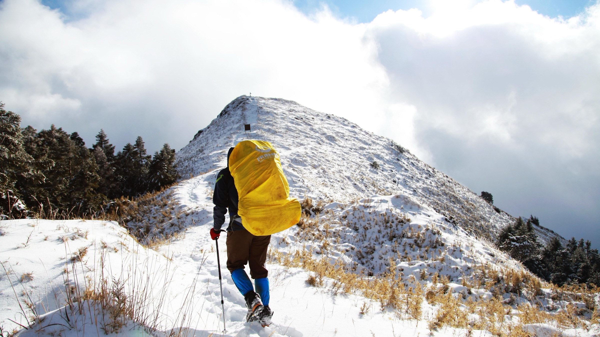

Larry Syu-Heng Lai, Ph.D.
Quantitative geoscientist


I am a quantitative geoscientist with a foundation in sedimentary geology, geomorphology, and applied data analytics. I work across wireline logs, core descriptions, 3D structure, and remote-sensing imagery to build predictive models and reproducible pipelines, and I write custom algorithms when existing tools fall short.
When I’m not immersed in research, I enjoy hiking, playing basketball, and snowboarding.
